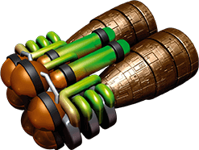

Moteurs

Les moteurs permettent à votre vaisseau d’avancer. Vous n’en avez pas besoin tout le temps, mais quand ils deviennent nécessaires, il est dans votre intérêt d’en avoir un maximum.
Les moteurs ne peuvent pas être ajoutés au vaisseau aussi facilement que les autres composants : le moteur doit être dirigé vers l’arrière du vaisseau. Et aucun composant ne peut se trouver sur l’emplacement situé juste derrière un moteur.
Ces restrictions sont gérées automatiquement. Lorsque vous placez un moteur, il pivotera pour être dirigé vers l’arrière. Vous ne pouvez pas appuyer sur un moteur pour le faire pivoter. Lorsqu’un moteur est soudé au vaisseau, l’emplacement situé juste derrière lui est entouré en rouge pour indiquer qu’aucun composant ne peut y être placé.

Le meilleur endroit pour placer des moteurs est la ligne du bas de votre vaisseau. Les vaisseaux comportant le plus de moteurs sont les plus rapides, c’est pourquoi vous chercherez à placer un maximum de moteurs sur votre vaisseau. Vous aurez besoin de vos moteurs lorsque vous vous trouverez dans l’Espace Intersidéral. Si la puissance de vos moteurs est nulle lorsque vous trouvez dans l’Espace Intersidéral, vous serez forcé à abandonner le vol. Il n’est pas non plus conseillé d’être le vaisseau le moins rapide lorsque vous traversez une Zone de Combat.
Doubles Moteurs
Les mêmes règles de construction s’appliquent aux doubles moteurs. Ils sont deux fois plus puissants, mais leur activation nécessite l’utilisation d’une cellule d'énergie  .
.

N’oubliez pas les cellules d'énergie !
Puissance des moteurs
Lorsque vous trouverez dans l’Espace Intersidéral ou dans une Zone de Combat, vous allez devoir déterminer votre puissance de moteurs. Les moteurs simples sont automatiquement activés. Ils n’ont pas besoin d'énergie. Le bonus de puissance apporté par l’extraterrestre brun est appliqué automatiquement. À côté de votre avatar, vous pouvez voir la puissance actuelle de vos moteurs.
Vous devez appuyer sur une cellule d'énergie  pour activer un double moteur. Si vous changez d’avis, cliquez sur le double moteur activé pour replacer la cellule d'énergie sur l’accumulateur correspondant. Lorsque vous avez fixé la puissance de vos moteurs, cliquez sur l’icône pour indiquer que vous êtes prêt.
pour activer un double moteur. Si vous changez d’avis, cliquez sur le double moteur activé pour replacer la cellule d'énergie sur l’accumulateur correspondant. Lorsque vous avez fixé la puissance de vos moteurs, cliquez sur l’icône pour indiquer que vous êtes prêt.
Voici comment est calculée la puissance de vos moteurs :
Chaque simple moteur compte pour 1.

Chaque double moteur activé grâce à une cellule d'énergie  compte pour 2.
compte pour 2.

Un extraterrestre brun ajoute 2 à votre puissance, mais uniquement si votre puissance de moteur est au minimum de 1. (C’est un technicien. Il ne va pas sortir pousser…)